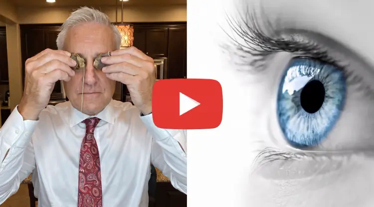

Vision & Healthy Aging
The Seven-Second Nighttime Habit Gaining Attention Among People Who Care About Their Eye Health
By Clear Sight Daily Editorial Team
August 5, 2026
3 min read

An unusual seven-second nighttime technique is capturing the
attention of thousands of people who want to maintain healthy
vision as they get older.
The science behind it is simple: it supports healthy blood flow
around the eyes, which researchers now consider a key factor in
maintaining visual health.
People who have already tried it report feeling more confident
with everyday activities like reading and driving at night. Tap
the button below to discover how this simple technique works and
how to start tonight.